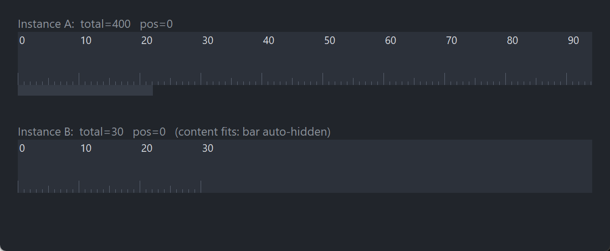

PsHScrollBar
An owner-drawn horizontal scrollbar for FreeBASIC Win32 applications: a flat track with a flat thumb that brightens under the mouse and while it is being dragged.
It is the bar you reach for when you already own the scrolling. The control knows nothing about your content — you tell it how many units there are, how many are visible, and where you are; it tells you when the user moves it. Nothing about its appearance depends on the visual style the user happens to be running, and every colour it paints is one you can set.
It never takes focus, has no arrow buttons at the ends, and does not size, place or hide itself. It handles horizontal wheel and precision-touchpad gestures, and exposes that same handling as a public function so you can route a swipe made over your content into the bar — which is what makes the feature usable, since the bar itself is a twelve-pixel strip.
What it looks like

The horizontal twin of PsVScrollBar, axis-transposed. A scrolls and shows its thumb; B fits its viewport, so the bar auto-hides. Note the wheel sign is inverted relative to the vertical bar — that is the trap in this control, not a detail.
Requirements
Files to copy into your project:
| File | Purpose |
|---|---|
PsHScrollBar.bi | Declarations — types, callbacks, constants, function prototypes |
PsHScrollBar.inc | Implementation |
PsBufferPaint.bi | The flicker-free drawing surface the control paints through |
PsBufferPaint.inc | Its implementation |
AfxNova is required. The control is built on CWindow, and PsBufferPaint draws through AfxNova's GDI+ wrappers. Sources include AfxNova relative to the workspace root (#include once "AfxNova\CWindow.inc"), so builds need the workspace root on the include path:
fbc64.exe -i "C:\dev" main.basInclude order. PsHScrollBar.inc pulls in its own .bi, which pulls in PsBufferPaint.bi. The AfxNova headers come first, then the two implementation files in this order:
#include once "windows.bi"
#include once "AfxNova\CWindow.inc"
#include once "AfxNova\AfxStr.inc"
#include once "AfxNova\AfxGdiplus.inc"
using AfxNova
#include once "PsBufferPaint.inc"
#include once "PsHScrollBar.inc"GDI+ must be running before the first repaint and must outlive the last one. The control renders through GDI+, so bracket your message loop:
dim as ULONG_PTR gdipToken = AfxGdipInit()
' ... create windows, run the message loop ...
AfxGdipShutdown( gdipToken )AfxGdipShutdown must come after every window is destroyed, because each repaint builds and tears down a PsBufferPaint. If you also initialise COM, do it before AfxGdipInit and uninitialise it after AfxGdipShutdown — GDI+ leans on COM.
Never name an identifier ok. GDI+ defines Ok = 0 as a Status enum value in namespace AfxNova, and hosts customarily say using AfxNova. An existing variable, parameter or function called ok becomes a duplicate definition the moment you adopt these files. Use bOK instead.
There is no pump obligation. The control needs no message filter, no IsDialogMessage and no hook of any kind. It is not a tabstop and never takes focus, so nothing in your message loop has to know it exists.
But you should route wheel messages yourself. Windows delivers WM_MOUSEHWHEEL to the focused window, and this control never takes focus. Hovering over the bar works only because Windows 10+'s "Scroll inactive windows when I hover over them" (Settings → Mouse) is on by default and redirects the message to the window under the cursor. With that setting off, the message goes to whatever has focus and DefWindowProc bubbles it to that window's parent — never sideways to the bar. Handle WM_MOUSEHWHEEL in the window that owns your content and call PsHScrollBar_HandleWheelDelta; that path is reliable regardless of the setting, and it makes the whole content area a scroll target instead of a narrow strip.
Quick start
' Create it. The control is created zero-sized and hidden.
dim as HWND hSB = PsHScrollBar_Create( hWndParent, IDC_MYFORM_HSCROLL )
' Theme it, and be told when the user scrolls.
PsHScrollBar_SetColors( hSB, BGR(33,37,43), BGR(53,59,69), BGR(90,98,112) )
PsHScrollBar_SetScrollCallback( hSB, @MyBar_Scroll )Then, from your layout code — on every resize, and whenever the content changes:
sub MyForm_Layout( byval hwnd as HWND )
dim pWindow as CWindow ptr = AfxCWindowPtr( hwnd )
dim as integer barH = pWindow->ScaleY( CHSCROLL_DEFAULT_HEIGHT )
' You place the bar. It never sizes or moves itself.
SetWindowPos( hSB, 0, xLeft, yBottom, xRight - xLeft, barH, SWP_NOZORDER )
' Push the range. Passing the current position preserves it -- SetRange clamps
' it if the new range no longer allows it.
dim as integer nPage = (xRight - xLeft) \ CHAR_WIDTH
PsHScrollBar_SetRange( hSB, gTotalColumns, nPage, PsHScrollBar_GetPos( hSB ) )
' Auto-hide is YOUR decision, made from the range.
if PsHScrollBar_NeedsThumb( hSB ) then
ShowWindow( hSB, SW_SHOWNA )
else
ShowWindow( hSB, SW_HIDE )
end if
end subThe scroll callback — this is the user moving the bar, so scroll your content to match:
sub MyBar_Scroll( byval hScrollBar as HWND, byval newPos as integer )
gLeftColumn = newPos
InvalidateRect( HWND_MYFORM, NULL, FALSE )
end subAnd, in the window that owns the content, forward horizontal swipes:
case WM_MOUSEHWHEEL
' Wheel messages carry SCREEN coordinates in lParam, unlike every other mouse
' message -- and both those coordinates and the delta are SIGNED words that
' loword/hiword hand back unsigned.
dim as POINT pt
pt.x = cast(short, loword(lParam))
pt.y = cast(short, hiword(lParam))
ScreenToClient( hwnd, @pt )
if PtInRect( @gViewport, pt ) then
PsHScrollBar_HandleWheelDelta( hSB, cast(short, hiword(wParam)) )
end if
return 0That is the whole minimum. Everything below is refinement.
Concepts
The handle is a real HWND
PsHScrollBar_Create returns an ordinary window handle, and every PsHScrollBar_* function takes it. It is not an opaque type, so you can treat the control as the window it is — SetWindowPos to place and size it, ShowWindow to show or hide it, GetDlgItem to find it by the CtrlID you passed at creation.
Every instance keeps its own state, so any number of bars can coexist in one window and nothing you do to one can disturb another.
It is created zero-sized and hidden
PsHScrollBar_Create gives the control the styles WS_CHILD, WS_CLIPSIBLINGS and WS_CLIPCHILDREN. WS_VISIBLE is deliberately absent, so a newly created bar shows nothing until you size it and call ShowWindow. That lets you configure it — colours, callbacks, range — before it is ever seen, and it is what makes the auto-hide pattern natural: you show the bar once you know there is something to scroll.
There is no WS_TABSTOP and the control never calls SetFocus. It is a mouse-only surface.
The range model: total, page, position
Three numbers describe everything, and they are deliberately generic — the control has no idea whether a "unit" is a character, a column, a pixel or a record:
| Term | Meaning |
|---|---|
total | How many units of content there are altogether |
page | How many units are visible at once |
pos | The index of the first visible unit — the leftmost one |
Two values are derived from those, and both matter:
MaxPos = max( total - page, 0 ) the largest legal pos
NeedsThumb = (total > 0) and (page > 0) and (total > page)pos is always clamped into [0, MaxPos] by every path that can change it — SetRange, SetPos, a thumb drag, a track click, the auto-repeat and the wheel. There is no way to get an out-of-range position out of the control.
Positions are whole units. There is no fractional scrolling: if you need sub-unit precision, make your unit smaller — pixels rather than characters, say — and give the bar a correspondingly larger total and page.
Who owns the content
You do, entirely. The control stores three integers and paints a thumb; it never touches your content, never asks how wide it is, and never scrolls anything. The contract is:
- You compute
total,pageandposand push them in withPsHScrollBar_SetRange. - The user drags, clicks or swipes; the control clamps, repaints itself, and calls your scroll callback with the new
pos. - Your callback scrolls your content and repaints it.
Step 3 must not push the position back into the bar — the control already has it. PsHScrollBar_SetPos exists for the other direction: when you scroll the content (a keyboard command, a caret moving off the right edge, a search hit) and need the bar to catch up.
Geometry is derived, never assigned
The thumb rectangle is recomputed from the range on every paint, every resize and every position change, so it can never go stale no matter who moved what. You never set it.
track = client width
minThumb = ScaleX( CHSCROLL_MIN_THUMB ) 20, DPI-scaled
thumbW = clamp( (page / total) * track, minThumb, track )
span = track - thumbW
thumb.left = (pos / MaxPos) * span 0 when MaxPos = 0
thumb.top = client top always the full height
thumb.bottom = client bottomThe thumb always spans the bar's full height; only its left edge and its width vary. It is clamped to a minimum width so it stays grabbable on very wide content — which is why a 100,000-unit line still gets a thumb you can hit, at the cost of the thumb no longer being exactly proportional there.
A drag runs that mapping backwards: the cursor's x, minus the offset within the thumb where it was grabbed, is converted to a position, and the thumb is then rebuilt from that position. The thumb and the position you are told about therefore cannot drift apart. While the drag holds capture, a cursor x below zero — dragged left of the client area — is the normal case, not an edge case; the position simply clamps.
When total <= page — everything fits — the thumb rect is empty and the control paints only its background.
The bar never sizes, places or hides itself
CHSCROLL_DEFAULT_HEIGHT (12) is a suggestion for you to DPI-scale and use; the control does not read it. The bar's size and position come from your SetWindowPos, and its visibility from your ShowWindow.
That includes auto-hide. PsHScrollBar_NeedsThumb answers the range question — is there anything to scroll? — and the decision to show or hide is yours. That function deliberately ignores the bar's own geometry: you ask it in order to decide whether to show the bar at all, and at that moment the bar may still be 0×0, because it only gets a size once it is shown. Folding a track-width test into the answer would deadlock — never sized, so never needed, so never shown. The geometry guard lives in the thumb calculation instead, which simply produces no thumb when there is no track.
If you hide the bar on mouse-leave rather than on range, ask PsHScrollBar_IsDragging first. With capture held, the cursor legitimately roams outside the bar mid-gesture, and hiding it then would cancel the drag under the user's finger.
The control does clean up after itself when you hide it: hiding drops the hover highlight, stops any auto-repeat and cancels a drag in progress, so nothing stale reappears the next time you show it.
Wheel and trackpad
The control handles WM_MOUSEHWHEEL, so a horizontal two-finger swipe — or a tilt wheel — with the cursor over the bar scrolls it. All of the work lives in one public function, PsHScrollBar_HandleWheelDelta, and the control's own message handler is a thin wrapper around it, so the built-in path and anything you route in behave identically.
Horizontal input only, deliberately. There is no Shift+wheel modifier, and a plain vertical wheel over this bar does nothing — WM_MOUSEWHEEL is not claimed and falls through to DefWindowProc. A horizontal bar answers horizontal gestures; anything else would make the same physical gesture mean different things a few pixels apart.
One notch is 120 delta units, and one notch moves SetWheelStep range units. The default step of 0 means follow the system setting: SPI_GETWHEELSCROLLCHARS — the horizontal analogue of the lines setting, and a separate user preference — typically 3, re-read on every message so a Control Panel change takes effect immediately without restarting your app. The special value WHEEL_PAGESCROLL ("one page per notch") is honoured and resolves to the current page. Set the step explicitly when your range units are neither lines nor characters and the system number would be meaningless.
Sub-notch deltas accumulate. High-resolution wheels and precision touchpads routinely send deltas well under 120. The remainder that does not amount to a whole unit is carried between messages, so a slow two-finger swipe scrolls continuously instead of sitting dead until a full notch arrives. Only the delta that the applied units actually represent is consumed, so a run of uneven deltas neither leaks nor double-counts.
The sign, which is the trap. For WM_MOUSEHWHEEL a positive delta means "scroll right", which increases pos. A negative delta scrolls left and decreases pos. This is the opposite reading from a vertical bar, where a positive WM_MOUSEWHEEL delta scrolls up and decreases the position — so if you write one routing routine that feeds both axes, do not assume they match. Pass the value exactly as the message gave it to you and let the control apply the sign; do not negate it first.
Extract the delta as a signed word. loword and hiword yield unsigned words, so a swipe-left delta read without the cast becomes ~65416 instead of −120 and the direction silently inverts:
PsHScrollBar_HandleWheelDelta( hSB, cast(short, hiword(wParam)) )Routing. Wheel messages go to the focused window, and this control never takes focus. Hovering works only because "Scroll inactive windows when I hover over them" is on by default; with it off, the message never reaches the bar. Handling WM_MOUSEHWHEEL in the window that owns your content and calling PsHScrollBar_HandleWheelDelta yourself is the reliable path — and it also makes the whole content area a scroll target, which is what users expect. The built-in handler is the convenience, not the mechanism.
Wheel scrolling fires the scroll callback, because it is the user scrolling. The programmatic PsHScrollBar_SetPos stays silent.
Mouse capture is taken
Pressing the left button on the thumb takes capture, so the drag survives the cursor leaving the bar — dragging left or right of the window is the normal case, not an edge case, and the position simply clamps. Pressing the track also takes capture, because that click starts an auto-repeat which must be bounded by the button release.
Capture is released on WM_LBUTTONUP, and a WM_CAPTURECHANGED from anywhere else cancels the drag and the auto-repeat rather than leaving either stranded. PsHScrollBar_IsDragging reports whether either gesture is live, which is what a host that hides the bar on mouse-leave needs in order not to pull it out from under the user.
Programmatic changes are silent
PsHScrollBar_SetPos and PsHScrollBar_SetRange never fire the scroll callback. The callback reports user action — a thumb drag, a track click, an auto-repeat step, a wheel gesture — and nothing else. This follows Win32's own SetScrollInfo / WM_HSCROLL split, and it means you can safely call either setter from inside your own scroll handler without recursing.
Hover tracking
The thumb brightens under the mouse. WM_MOUSELEAVE is not reliably delivered when the cursor leaves fast, so the control arms a 100 ms poll timer as a safety net while the mouse is inside, and clears the highlight the moment the poll finds the cursor gone. Both the timer and the hover state are dropped when the highlight clears, so this costs nothing while the mouse is elsewhere.
Lifetime
The control frees itself when its window is destroyed, killing its own timers on the way out. It owns no host resources: no font, no tooltip window, nothing to release. Destroy the parent and you are done.
Behaviour and limits
Firm properties of the control, not settings:
- The control never sizes, moves or hides itself.
CHSCROLL_DEFAULT_HEIGHTis a suggestion you scale and apply; placement is yourSetWindowPosand visibility is yourShowWindow. - Auto-hide is your decision, not the control's.
PsHScrollBar_NeedsThumbanswers a range question only and deliberately ignores the bar's own geometry — otherwise a bar that is never sized would never be needed and so never shown. - Do not hide the bar while
PsHScrollBar_IsDraggingis TRUE. During a drag or an auto-repeat the cursor legitimately leaves the bar, and hiding it there cancels the gesture mid-stroke. - Positions are whole units, always clamped to
[0, total − page]. No fractional scrolling, and no way to read an out-of-range position back out. SetRangeclampstotalandpageto a minimum of 0, then clamps the position into the range those two imply. Passing a position beyond the end is the normal way to say "as far as it goes".- There is no getter for
totalorpage. Only the position round-trips (PsHScrollBar_GetPos). Keep your own copy of the other two if you need them. - There are no arrow buttons. The whole client area is track and thumb. A click on the track pages by exactly
pageunits toward the click and then auto-repeats while held, stopping when the thumb reaches the cursor or when there is nowhere left to go. - The thumb has a minimum width of
CHSCROLL_MIN_THUMB(20, DPI-scaled), so on very wide content it is no longer exactly proportional. That is what keeps it grabbable. - The control never takes focus and handles no keyboard input. It is not a tabstop. Home, End and the arrow keys are yours to handle, by calling
PsHScrollBar_SetPos. - Only horizontal wheel messages are handled. A plain vertical wheel over the bar does nothing:
WM_MOUSEWHEELis not claimed and falls through toDefWindowProc. There is no Shift+wheel modifier. - A wheel message the control handles is consumed, whether or not the position actually moved, so it never bubbles to your parent window as well.
- The wheel sign is not symmetric with a vertical bar. A positive
WM_MOUSEHWHEELdelta increasespos, where a positive vertical delta would decrease it. If you route deltas yourself, pass them unmodified. hiwordis unsigned. Extract the delta ascast(short, hiword(wParam))or the direction inverts silently.- There is no enabled/disabled state. The control does not grey out and does not change appearance for
EnableWindow. When there is nothing to scroll, a click on it does nothing at all — the button-down handler returns immediately and takes no capture. - Double-clicks are not handled. The window class carries
CS_DBLCLKS, so a rapid second click on the track arrives asWM_LBUTTONDBLCLK, which the control ignores. Sustained paging is what the auto-repeat is for. - The right mouse button is not handled at all. A context menu over the bar is your business.
- No tooltips, no hit-test function, no smooth-scroll animation, and no getter for the colours.
API reference
Creation
| Function | Description |
|---|---|
PsHScrollBar_Create( hWndParent, CtrlID ) as HWND | Creates the bar as a child of hWndParent and returns its window handle. CtrlID becomes the window's GWLP_ID, so GetDlgItem finds it. Created zero-sized and hidden — place it with SetWindowPos, then ShowWindow once you know there is something to scroll. |
Range and position
| Function | Description |
|---|---|
PsHScrollBar_SetRange( hSB, nTotal, nPage, nPosition ) | Pushes the whole model in at once and repaints. nTotal and nPage are each clamped to a minimum of 0; nPosition is then clamped into [0, nTotal − nPage], so passing a huge value means "as far as it goes". Silent — does not fire the scroll callback. Call it from your layout code whenever the content or the viewport changes; passing PsHScrollBar_GetPos( hSB ) as the position preserves where the user was. |
PsHScrollBar_GetPos( hSB ) as integer | The index of the leftmost visible unit. Always within [0, total − page]. |
PsHScrollBar_SetPos( hSB, nPosition ) | Moves the bar to a position you chose, clamped into [0, total − page], and repaints. Silent — does not fire the scroll callback, which is what makes it safe to call from inside your own scroll handler. A no-op when the bar is already there. |
Wheel
| Function | Description |
|---|---|
PsHScrollBar_HandleWheelDelta( hSB, nDelta ) as boolean | Feeds the bar one horizontal wheel delta; returns TRUE if the position actually moved. nDelta is the already-extracted signed delta — cast(short, hiword(wParam)), never the raw wParam, because hiword is unsigned and an uncast swipe-left delta inverts the direction. A positive delta scrolls right and increases pos — the opposite reading from a vertical bar — so pass the value unmodified and let the control apply the sign. Sub-notch remainders are carried between calls. Fires the scroll callback when the position moves. This is public so you can route a swipe your content window received into the bar — do that, because wheel messages go to the focused window and this control never takes focus. |
PsHScrollBar_SetWheelStep( hSB, nUnitsPerNotch ) | How many range units one 120-unit notch scrolls. Clamped to a minimum of 0, where 0 (the default) means follow the system setting — SPI_GETWHEELSCROLLCHARS, re-read per message, with WHEEL_PAGESCROLL resolving to one page. Changing the value discards any part-accumulated sub-notch remainder, because that remainder was measured against the old step. Setting it to the value it already has is a deliberate no-op that keeps the remainder — which matters if, like most hosts, you set the step from the same layout routine that pushes the range, since that routine re-runs constantly, including mid-swipe. |
PsHScrollBar_GetWheelStep( hSB ) as integer | The current units-per-notch, or 0 when following the system setting. It never reports the resolved system value. |
Geometry and layout
| Function | Description |
|---|---|
PsHScrollBar_NeedsThumb( hSB ) as boolean | TRUE when total > 0, page > 0 and total > page — i.e. there is something to scroll. A range question only: it deliberately ignores the bar's own size, so it is valid before the bar has ever been given one. This is the auto-hide test; the ShowWindow call is yours. |
PsHScrollBar_IsDragging( hSB ) as boolean | TRUE while the user is actively working the bar with the mouse captured — a thumb drag or a track auto-repeat. Ask this before hiding the bar on mouse-leave: with capture held the cursor legitimately roams outside it, and hiding it then would cancel the gesture under the user's finger. |
The bar's own rectangle is whatever you gave it. Use CHSCROLL_DEFAULT_HEIGHT, DPI-scaled, for a conventional height, and give the bar the full width of the region it scrolls.
Appearance
| Function | Description |
|---|---|
PsHScrollBar_SetColors( hSB, backclr, foreclr, foreclrhot ) | Sets all three colours at once and repaints: track background, thumb, and thumb while hot or dragging. There is no getter and no partial setter — pass all three every time. Ignored entirely while a paint callback is installed. |
Callback registration
| Function | Description |
|---|---|
PsHScrollBar_SetPaintCallback( hSB, usersub ) | Installs a renderer that draws the whole bar instead of the built-in painter, and repaints. Pass 0 to go back to the built-in painter. |
PsHScrollBar_SetScrollCallback( hSB, usersub ) | Installs the handler told when the user scrolls. Does not repaint — it changes nothing visible. |
Both are optional and independent.
Colors
There is no colours struct. The control paints three colours, set together by PsHScrollBar_SetColors, and each ships with a usable dark default — so a bar you never call that function on still looks right.
| Colour | Parameter | Default | Paints |
|---|---|---|---|
| Track background | backclr | BGR(33,37,43) | The whole client area, always, including behind the thumb |
| Thumb | foreclr | BGR(53,59,69) | The thumb at rest |
| Thumb, active | foreclrhot | BGR(90,98,112) | The thumb while the mouse is over it, or while it is being dragged |
Which colour wins
The background is unconditional — it is painted over the whole client area first, on every repaint. The thumb is then drawn over it, in one of two colours:
hot OR dragging > idleThere is no separate pressed colour and no disabled colour: hovering and dragging render identically, and the control has no disabled state. There is no state in which the thumb is drawn but the background is not.
When there is nothing to scroll, the thumb rect is empty and only the background is painted.
What the painter draws
| Part | Shape |
|---|---|
| Track | The whole client rectangle, filled with the background colour |
| Thumb | A plain filled rectangle spanning the bar's full height — no border, no rounding, no gradient |
All of it goes through PsBufferPaint, so there is no flicker. A paint callback gets that same buffer and can draw anything it likes in place of the two rectangles.
Callbacks
Scroll
type HScrollCallbackSub as sub( byval hScrollBar as HWND, byval newPos as integer )The user moved the bar. Fires for a thumb drag (once per position change during the drag), a track click, each step of the track auto-repeat, and a horizontal wheel or trackpad gesture. newPos is the new index of the leftmost visible unit, already clamped, and the control's own state is already updated — so PsHScrollBar_GetPos( hScrollBar ) equals newPos.
It does not fire for PsHScrollBar_SetPos or PsHScrollBar_SetRange, which is what makes it safe to call either from inside this handler.
The callback's job is to scroll and repaint your content. Do not push the position back into the bar; it is already there.
The handle is passed in so one callback can serve any number of bars.
Paint
type HScrollPaintCallbackSub as sub( byval p as PSHSCROLLBAR_PAINTINFO ptr )Draws the whole bar instead of the built-in painter. Paint through p->b, the control's double buffer for this repaint — do not touch the screen DC.
Nothing has been painted for you. The callback runs in place of the background fill, not after it, so it must cover every pixel of the client area. The three colours set by PsHScrollBar_SetColors are not consulted at all while a callback is installed; use your own.
PSHSCROLLBAR_PAINTINFO carries everything you need:
| Field | Meaning |
|---|---|
b | The control's PsBufferPaint for this repaint (borrowed, not owned) |
rcClient | The whole client area — the track |
rcThumb | The thumb, in client coordinates. Empty when no thumb is needed — test it with IsRectEmpty before drawing |
isHot | The mouse is over the thumb |
isDragging | The thumb is being dragged right now |
The thumb rect is recomputed immediately before the callback runs, so it is always current. Use it as given rather than re-deriving it from the range.
A typical callback:
sub MyBar_Paint( byval p as PSHSCROLLBAR_PAINTINFO ptr )
p->b->SetBackColor( theme.BackColorBox )
p->b->PaintClientRect()
if IsRectEmpty( @p->rcThumb ) = 0 then
dim as RECT rcT = p->rcThumb
rcT.top += 2 ' inset the thumb within the track
rcT.bottom -= 2
dim as COLORREF clr = theme.Accent
if p->isHot orelse p->isDragging then clr = theme.AccentHot
p->b->SetBackColor( clr )
p->b->PaintRect( @rcT )
end if
end subConstants
| Constant | Value | Meaning |
|---|---|---|
CHSCROLL_MIN_THUMB | 20 | Minimum thumb width in pixels. Used by the control, DPI-scaled at the point of use |
CHSCROLL_DEFAULT_HEIGHT | 12 | Suggested track height in pixels. The control never reads this — scale it yourself and pass it to SetWindowPos |
CHSCROLL_HOTTRACK_MS | 100 | Hover poll interval in ms, the safety net for unreliable WM_MOUSELEAVE |
CHSCROLL_REPEAT_DELAY | 400 | Delay in ms before a held track click starts auto-repeating |
CHSCROLL_REPEAT_MS | 80 | Auto-repeat interval in ms while the button is held on the track |
Two timer ids are also defined, IDT_CHSCROLL_HOTTRACK (&hCB20) and IDT_CHSCROLL_REPEAT (&hCB21). Timer ids are per-window, so every instance can safely share these values — but avoid reusing them for your own timers on the bar's own window.
Licence
Mozilla Public License 2.0.
MPL-2.0 is file-level copyleft, chosen deliberately for a drop-in control:
- You may use this in closed-source software, commercial or otherwise. §3.2 permits static linking with no additional conditions.
- If you modify these files, publish those files' changes. The obligation is per-file — your own sources are unaffected however tightly they are combined with these.
- The Exhibit B "Incompatible With Secondary Licenses" notice is not applied, which keeps this GPL-compatible.